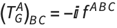
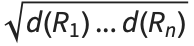
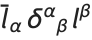
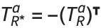

Group Magic
This note documents the group theory facilities of Matchete. Most users can simply ignore this for practical EFT calculations, but it provides important background to establishing new representations and use Clebsch–Gordan coefficients (invariants) needed to construct Lagrangians with fields in exotic representations. We document the use of group theory tools, which facilitate Matchete calculations, and enable advanced users, who wish to explore theories with less common representations/groups.
Most low-level routines refer back to a specific Lie algebra, which are referred to with the regular classification of the compact, simple Lie algebras.
| CartanMatrix[alg] | gives the Cartan matrix of the algebra |
| AlgebraRank[alg] | gives the rank of the algebra |
| GroupDimension[alg] | gives the dimension of the group associated with the algebra |
| PositiveRoots[alg] | gives a list of all positive roots of the algebra |
Algebras
Despite the name, the group theory module more aptly deal with the Lie algebras of the compact simple Lie symmetry groups used in QFT. These are the ordinary algebras An, Bn, Cn, and Dn; and the exceptional E6,7,8, F4, and G2. Most of the routines take an algebra as an argument, for which the Head Alg is used, e.g., Alg[“E”, 6].
For convenience, the ordinary algebras can also be referred to, using the associated Lie group as short-hand notation. They are SU[n], SO[n], and Sp[n]. For instance,
Cartan matrix
The quintessential information relating to the roots of the algebra is contained in the Cartan matrix (CM) of the algebra. For most use cases, the user will not directly need this, but the CM can be obtained with
The rank of the algebra, the dimension of the maximal Cartan sub-algebra, is the length of the CM. For convenience, it is also given by
Roots
The result is the set of weights (Dynkin coefficients) of each root. The negative roots are found by multiplying with (-1), and between them, all roots are obtained.
Following standard convention, each representation of the algebra is uniquely labeled with its highest weight (the dimension of a representation need not be unique). The Dynkin coefficient of the weight is always used when naming a representation. These are a set of non-negative integers with rank of the algebra, e.g., {1, 0} of Alg[“A”, 2] (SU[3]), corresponding to the fundamental representation.
Finding the representations of an algebra
| RepresentationsUpToDimension[alg, dim] | returns a list with all representations of an algebra with dimension less than the integer dim |
| AdjointRepresentation[alg] | is the adjoint representation of the algebra |
| FundamentalRepresentation[alg] | is the fundamental representation of the algebra |
Routines to find representations of a Lie algebra. All representations are denoted by the Dynkin coefficients.
While the interesting or relevant representations of an algebra is best looked up elsewhere along with their properties, the module contains a few ways of finding representations. First, we can request a list of all representations of an algebra up to a given dimension (here SU(6) representations up to dimensions 100):
The output is organized as a list of representations, each with the dimension and its Dynkin coefficients. In this example, we see both the fundamental and anti-fundamental representations with dimension 6, {1, 0, 0, 0, 0} and {0, 0, 0, 0, 1}, respectively.
One will frequently need some common representations of a group, namely the fundamental and the adjoint representation. The Dynkin coefficients of these may be found with the functions FundamentalRepresentation and AdjointRepresentation.
Properties of a representation
Given a representation, we may wish to determine some of its properties. First to obtain the dimension of a representation we may call RepresentationDimension[alg, rep].
More detailed information about a representation vector space can be obtained by finding the weights of the representation. RepresentationWeights[alg, rep] produces an association with all the representation weights as keys and the multiplicity of each weight as the value
As an example, we find that the weight {0, 0} of the adjoint of SU(3) has multiplicity 2, as we know it from the eightfold way from QCD mesons:
Some useful group invariants that often show up in QFT calculations are the Dynkin index DynkinIndex[alg, rep] (Tr[TATB]=S2(R)δA B for representation R ), here normalized to for the fundamental representations, and the quadratic Casimir Casimir2[alg, rep] (TATA = C2(R) ).
It is often useful to know wether a representation is real, pseudoreal, or complex. To this end the Frobenius–Schur indicator FSIndicator[alg, rep] is used. The indicator is +1 for real, 0 for complex, and -1 for pseudoreal representations,respectively.
For the adjoint of SU(2), fundamental of SU(3), and fundamental of Sp(4), we find that they are real, complex, and pseudoreal, respectively:
The dual representation (of complex representations) can be determined with DualRepresentation[alg, rep].
The anti-fundamental representation of SU(3) is the dual to the fundamental representation. It is determined with
Representation products
A frequent question when working with representations of an algebra is how a product of representations decompose as a direct sum of irreducible representation. To this end, we need but pass a list of the representations in the product to RepresentationProduct[alg, {rep1, rep2, …}]. The result is a decomposition with all the irreducible representations in the product (with multiplicity). N.b. this should not be confused with the weights of the representations; these are the highest weights of each representation and how many times the representation occur in the product.
For SU(3), we obtain the familiar composition for a product of a fundamental and an anti-fundamental representation in the adjoint and a singlet:
In field theoretic applications, all operators are invariants of the symmetry groups, meaning that the fields should contract to form singlets. Extracting a singlet combination of a product representation is done with generalized Clebsch-Gordan coefficients (CG), which are generally basis-dependent quantities. There is an ambiguity to their construction that depends on the specific basis used for the representations. Naturally, all orthogonal bases are equally suited for our purposes, and our automated construction ensures that the choice of CGs are consistent with each other; that is the basis vectors for a given representation of a group is consistent across all generated CGs.
| Generators[alg, rep] | produces a rank-3 tensor with the generators of the representation rep |
| StructureConstants[alg] | gives the structure constans of the algebra alg as rank-3 tensor |
| InvariantTensors[alg, {rep1, rep2, …}] | produces a basis of invariant tensors with indices in the representation rep1, rep2, … |
All of the invariants generated with the group theory module produce SparseArrays for more efficient manipulations for large representations. For large representation or in large products, the program may start to struggle with the numerics.
In field theory calculations, various CG coefficients end up being contracted. While these CG coefficients are treated symbolically in Matchete, the underlying calculations are done with the invariant tensors defined here. The use of the symbolic CG coefficients are documented in the CG Coefficients Tech Note.
Generators
The most common CG coefficients (outside of Kronecker deltas) are the generators of the group representations. There is generally a large degree of freedom in the matrix representation of generators, as they depend not only on the basis of the representation space, but also on the basis of the Lie algebra. We have chosen the generators such that they are both Hermitian and orthonormal (with an inner product defined by the trace in the space of the representation) following the usual convention. Furthermore, generators of different representation correspond to the same basis in the Lie algebra and are consistent with the choice of the adjoint representation in the group, i.e., the generators of the adjoint representation relates to the structure constant by . The generators of a representation is obtained with the function with the function Generators[alg, rep].
We may produce a set of generators for the fundamental representation of SU(3). While the ordering does not agree with the Gell-Mann matrices (all generators are generated automatically and have not been hard-coded), the structure is nevertheless familiar:
Structure constants
With the consistent basis choice of the Lie algebra (reflected in all generators), the StructureConstants[alg] fA B C are identical for the generators of all the representations of a group.
Between the fundamental generators and the structure constants of SU(3), we can verify the identity for the trace of commutators, 〈TA [TB, TC]〉 = i S2(R) fA B C:
General Clebsch-Gordan coefficients
The CGs between a set of representations are determined in a brute-force manner, finding all tensors in the null-space of the action of generators on the tensor. Consequently, the CGs can only be distinguished by their symmetry if there are more than one singlet in the product of the representation. Matchete provides the InvariantTensors[alg, {rep1, rep2, …}] to derive (exact) numerical CGs for the the product of arbitrary representations. The function returns a basis for the space spanned by all CGs of the representation product (with dimension corresponding to the number of singlets in the product).
A well-known example is the two singlets in the product of three adjoint SU(3) representations, fabc and dabc. To obtain the CGs in this example, we can call the main function for the job (taking as arguments an algebra and an ordered list of representations):
| SymmetricIndices | {} | dictates symmetries between some indices |
| AntisymmetricIndices | {} | dictates antisymmetries between some indices |
| Normalization | Default | sets the normalization of the tensor |
Options used in InvariantTensors.
The main way to distinguish between multiple CG coefficients in the same representation product is by restricting to a particular symmetry of the indices. To this end, there are options to force symmetrization or antisymmetrization of the indices of the CGs (assuming these indices are in the same representation).
For the CGs between the three adjoint representations of SU(3), we know that one is fully symmetric and the other anti-symmetric. We observed that there is but a single CG with each of these symmetries:
It is also possible to specify multiple non-overlapping sets of indices for (anti-)symmetrization. For convenience, we can also set the normalization of the CGs directly, which is very useful when matching conventions across various papers. The default is to normalize the CGs to , where d(Ri) is the dimension of each representation.
The default normalization of the 3-index anti-symmetric tensor of adjoint SU(3) representation, does not agree with the normalization of the structure constant, which is known to have normalization (norm squared) C2(G) * d(G)=3 * 8, following our normalization of the generators of the fundamental representation. We can recover the structure constants as
We emphasize that the representations passed to InvariantTensors are of the representations contracted to a singlet with the tensors, not the representation of the indices of the tensor. Those are in the conjugate representations.
Conjugate representations and dual bases
As mentioned all the CG tensors, generators, and structure constants (which are themselves particular choices of CG coefficients) are basis dependent. The big issue is that the basis assigned while generating these invariant, while consistent within all instances of a group, are not assigned with any great convenience between various representations. Specifically, dual (conjugate) representations, are not assigned with dual bases.
To illustrate this problem, consider the 2-index invariant between the anti-fundamental and fundamental of SU(3), which clearly is not the identity matrix as one might expect:
For this reason, we have introduced the head CRep (conjugate representation) to apply to a representation to specifically indicate the dual representation equipped with the dual basis. CRep can also be used on symplectic (pseudoreal) representations. Even though these representations are self-dual, the dual basis changes the matrix representation of the invariants.
To illustrate the case of invariants of a symplectic representation, consider a spinor lα in the fundamental of SU(2). The contraction with its conjugate, , is distinct from the contraction with it self, lαϵα βlβ. This reflects in the invariants
The use of CRep goes beyond two-index invariants and can be used for generators and multi-index invariants. With Hermitianity of the generators, we observe that the familiar property  is indeed satisfied when the dual basis is chosen for R*. For generators of a representation, TA ij, the two indices i and j belong to dual bases of dual representations.